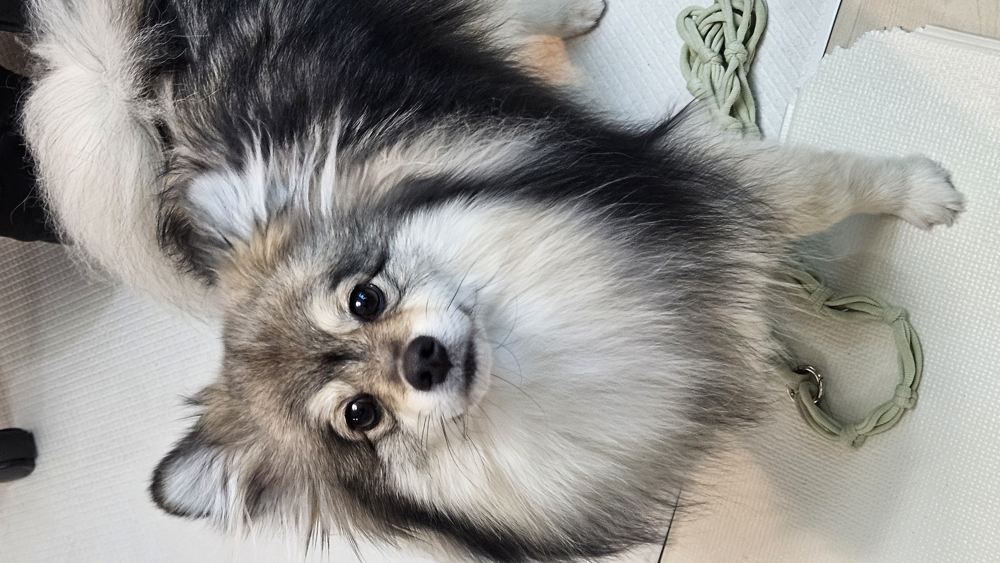
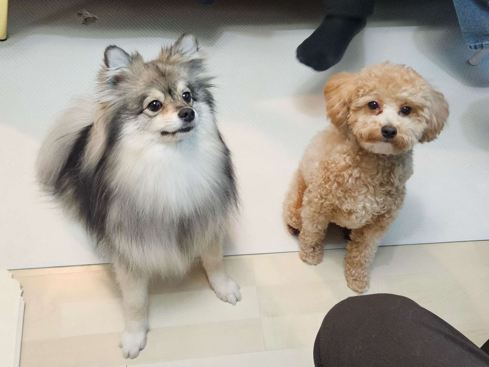
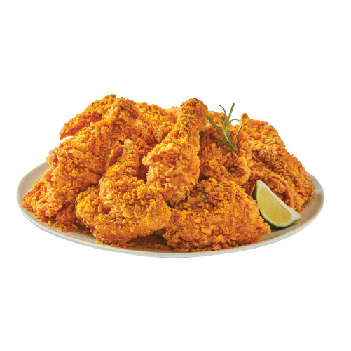
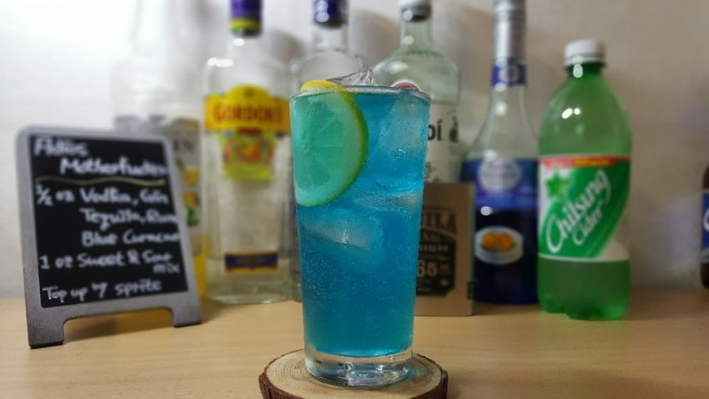

노트북
니콜라스 스파크스의 실화 바탕 소설을 원작으로 하며, 신분을 초월한 두 남녀의 지고지순한 사랑을 그린 작품이다.
저를 보면 인사해주세요!
이로운 개발자가 되고 싶은 로운입니다. GitHub 맞팔은 언제나 환영입니다!
| 이름 | 박준하 |
|---|---|
| MBTI | ESFJ |
| 취미 | 보드게임 |
| 좋아하는 음식 | 🍖고기로 이루어진 모든 것 |
내가 좋아하는 것들




니콜라스 스파크스의 실화 바탕 소설을 원작으로 하며, 신분을 초월한 두 남녀의 지고지순한 사랑을 그린 작품이다.
제인 오스틴의 소설을 원작으로 하며, 남자 주인공의 '오만'과 여자 주인공의 '편견'이 부딪히며 시작되는 밀당 로맨스 영화이다.
오늘 새롭게 배운 것들을 기록합니다.
header, nav, main, section, article, footer 등 시멘틱 태그의 역할과 사용법을 배웠다.